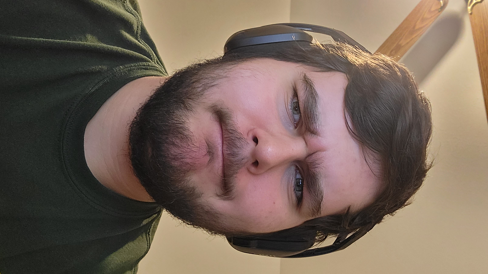

I would have to say that my favorite video would be Star Wars EPS 6 Return of the Jedi. One intersting fact about this movie is that Jabba's palace was full of animtronic work. Along with that throughout the whole original trilogy there was real people in both the R2-D2 and C-3PO suits. And finally Luke Skywalker made his own lightsaber for the movie.
Star Wars Eps: 6 Return of the Jedi is one of my favorite movies. There are many reasons for it being my favorite movie but one reason is because of the charater arcs. Anakin Skywalker goes throught a whole arc of being the chosen one and existing on the light and dark side of the force. And after all of that his son Luke Skywalker saves him and brings him back to the light side. That character arc is why Eps 6 is one of my favorite movies.
